By now you've probably seen loads of examples of the different types of cryptography used in today's world such as RSA, DES, AES etc. Now it's time to look at a new world entirely, the world of quantum mechanics. This looks at the physical properties of nature on subatomic particles and how these properties, such as superposition and entanglement, are used as the building blocks to create functional quantum computers.
Within this section we will look at the basic understanding of how quantum computers work, how their unique properties could lead to the downfall of RSA encryption, quantum cryptography and how it could be beneficial for the future and how quantum computers can be used to fix the problem of generating truly random numbers used for encryption keys.
How Quantum Computers Work?
Every classical computer we use sends data and completes operations using a base-2 language called binary. This means all data can be composed of strings of bits called ‘bytes’ where a bit can either be a 0 or a 1.
Quantum computers work in a similar way but instead of using classical bits (cbits) of 0 and 1, something called qubits are used. To understand what this means we first need to introduce some key notation called Dirac vector notation.
Consider the cbits 0 and 1, these can be represented by the notation:
• |0⟩ = one bit with value 0, also written as
• |1⟩ = one bit with value 1, also written as
Furthermore, we represent multiple bits in both their
individual state and
product state using the tensor product, ⊗. The tensor product is an operation that takes 2 vectors, X∈ℝ
n and Y∈ℝ
m and multiplies the second vector with each element of the first vector to produce a new vector Z∈ℝ
mn.
For example:
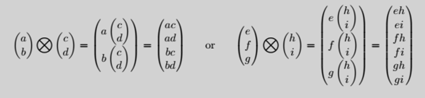
The way we present bits is as follows:
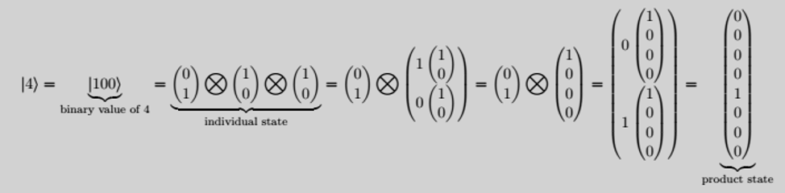
The rows in the
product state vector start from the 0
th row at the top such that the 1 lies in the 4th row, corresponding to the value of 4. Here we can factor the product state back into the
individual state. Also note, it's easy to see that if we had a length of bits of size n, this will produce a product state vector of size n. (In this example, we had a string of 3-bits which produced a vector of size 2
3 = 8.)
Representing cbits in this way allows a computer to carry out operations through the use of matrix multiplication. Although we won't go too much into that here, it is important to understand the relevance of these vectors when describing cbits.
Knowing this, we can now give a better explanation of how quantum computers work and how they differ from classical computers. As mentioned above, quantum computers use something called qubits. A qubit is represented by
where ||a||² + ||b||² = 1.
This may sound confusing at first but let's think about it visually. If ||a||² + ||b||² = 1, then we can think of this as a and b representing the points of a circle of radius 1 about the origin. (This would be a sphere if we considered imaginary numbers but for now we will just focus on real numbers.)
For example, this means a qubit could be
An important property of this qubit is that when it is measured (which is usually done at the end of a quantum computation to get the final result), it
collapses into an actual value of either a 0 or 1 bit. The probability of what it collapses into is as follows:
For a qubit
it has ||a||² chance of collapsing to a 0 bit and ||b||² chance of collapsing to a 1 bit.
E.g. for the qubit
it has ||1/2||² = 1/4 chance of collapsing to a 0 bit and ||√3/2||² = 3/4 chance of collapsing to a 1 bit.
Similarly to cbits, multiple qubits are also represented by the tensor product such that for 2 qubits
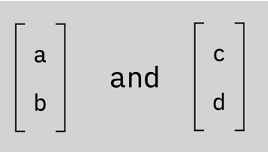
where ||a||² + ||b||² = ||c||² + ||d||² = 1, then: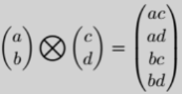
[Note: ||ac||² + ||ad||² + ||bc||² + ||bd||² = 1]
For example, 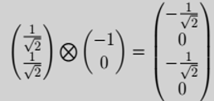
so there’s a ||-1/√2|| = 1/2 chance of the bits collapsing to |00⟩ or |10⟩ and 0 chance of collapsing to |01⟩ or |11⟩.
You may have heard statements about qubits being in superposition, where they are both 1 and 0 at the same time, this gives a clearer idea of why this is. Before being measured, a qubit can be in both states meaning the probabilities of measuring a 0 or 1 for a qubit are not just 0% or 100% chance but somewhere in between and measuring qubits in identical states may not give the same result.
Quantum Cryptography
Once quantum computers are up and running efficiently, what's next? Of course more advanced and time-consuming cryptography techniques could be developed on classical computers but most likely quantum computers will be able to break them in a short amount of time, just like with RSA. What is needed is a new type of cryptography, one that is not vulnerable to being broken and will still allow for relatively quick encryption. This is where quantum cryptography comes in. The main idea behind quantum cryptography is to exploit quantum mechanical properties to perform cryptographic tasks and create unbreakable cryptographic algorithms.
One of the most popular examples of quantum cryptography is called the
quantum key distribution (QKD). Here we will look at one type that uses the BB84 protocol (also known as the prepare and measure protocol). The main idea is to create a symmetric key between 2 systems which is completely random and hence impossible to break. This is done by the sender transmitting a stream of photons (with each photon correlating to either a 1 or 0) through polarising filters and across a quantum communication channel to the receiver, who then uses similar polarising filters to determine the states of the photons and hence the bits of the key.
Let's look at this more closely:
Photons have a property called
spin meaning that when they pass through a polarising filter, this
spin can be changed in a certain direction.
QKD uses 4 different types of filters, separated into 2 groups. The first group is called the
rectilinear scheme and consists of a horizontal and vertical filter. The 2nd group is called the
diagonal scheme and consists of filters that are at a +45° and -45° angle. 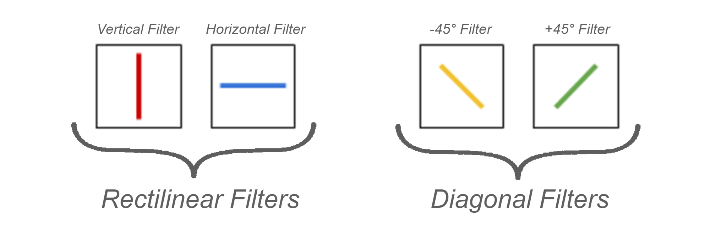
When a photon passes through a filter, as long as it is not perpendicular to the slit, it will spin in the direction of the filter. E.g. if a vertically spinning photon passes through a +45° filter, it will now spin in the +45° direction. However, if it tries to pass through a horizontal filter, it won't get through.
Photons that spin in the vertical or +45° direction will measure as a 1 bit. Photons that spin in a horizontal of -45° direction will measure as a 0 bit. This means each bit has 2 different possible photon directional spins and for an
n bit long string, there are 2
n different photon combinations. 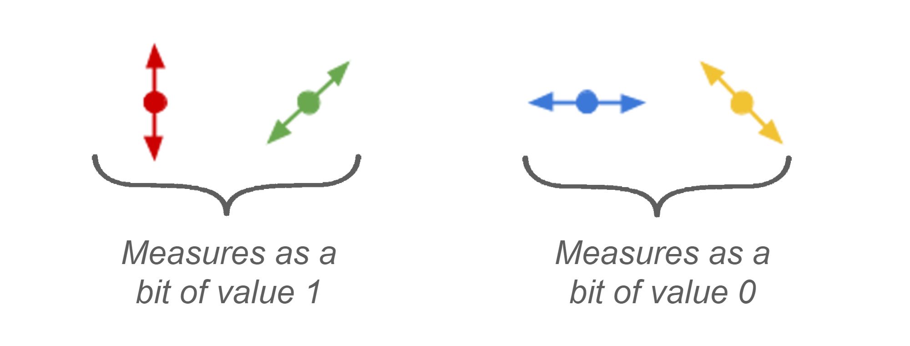
In QKD, only 2 filters are used which combines the 4 filters mentioned above. The first one contains both horizontal and vertical slits and the second one contains +45° and -45° slits.
So how would it work if Alice wanted to send a key to Bob?
• Alice creates a random bit (either 0 or 1) and randomly selects the rectilinear or diagonal filter.
• She then creates a polarised photon corresponding to the random bit and with spin in the direction of the randomly chosen filter. She then repeats this for a long string of bits.
• These polarised photons are then sent across the
quantum communication channel (which is public) to Bob. This channel could be made of fibre optic cables or free space. 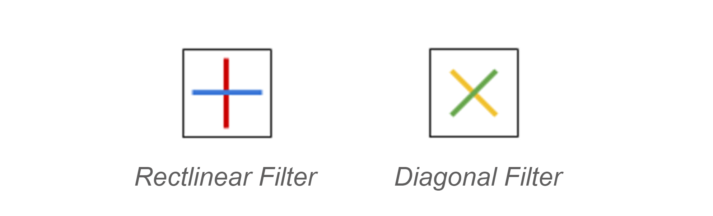
• When Bob receives the photons, he passes each one through one of the two filters randomly.
• If a photon has a rectilinear spin and is passed through a diagonal filter, then it will end up with a diagonal spin. The chance it will have a +45° spin is 50% and the chance it has a -45° spin is 50%. Similarly, if a photon with diagonal spin passes through a rectilinear filter, it has 50% chance of having horizontal spin or vertical spin.
• Bob then measures the photons to get their bit value.
• Finally, Alice and Bob compare what filter they used for each photon. If different filters were used, they discard that photon and the corresponding bit. Any bits that are left over are used as the key.
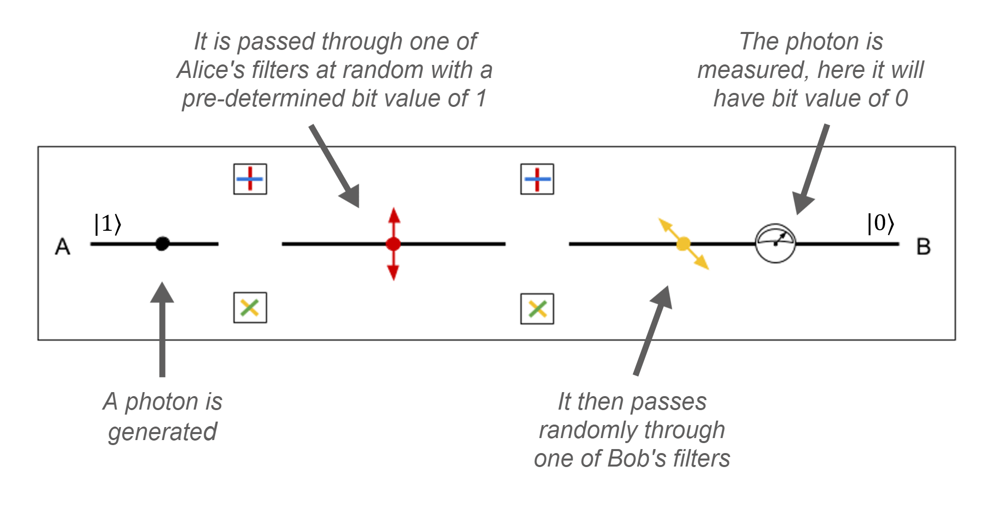
How does this process prevent any intruders from getting the key?
Let Eve be an eavesdropper that is listening into this process between Alice and Bob. When Alice is sending the polarised photons across to Bob, Eve has full access to them and so takes the photons off their path and measures them herself using her 2 filters. However, since Eve doesn't know what filter to use, she has to randomly choose one, just as Bob will have to when receiving them.
Let's say Eve has intercepted a photon with vertical spin (which corresponds to a 1 bit) and measures it using a diagonal filter. There is now a 50% chance this photon will come out with either a +45° spin or a -45° spin. Let's say it comes out with a -45° spin. Eve then sends this photon back out onto the channel so that Bob can receive it. When Bob receives it, he randomly chooses to pass it through a rectilinear filter, just as Alice did. The photon emerges with horizontal spin (remember there is a 50% chance this can occur) which measures to a bit value of 0.
When Alice and Bob are then comparing the filters they use, they notice that although they used the same filter for the photon, it has a different spin and hence bit value. This must mean someone has tampered before Bob received it. This is then flagged as an error and the photon is discarded.
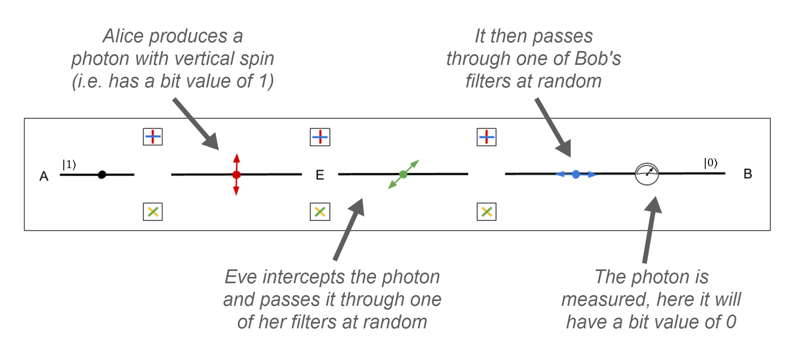
Probability can be used to find a suitable value, p, such that if more than p bits are flagged as an error, then there is an intruder and the key is aborted. Alice and Bob then start the process again, potentially in a new channel.
The table below shows an example of a QKD between Alice and Bob when Eve is intercepting the photons:
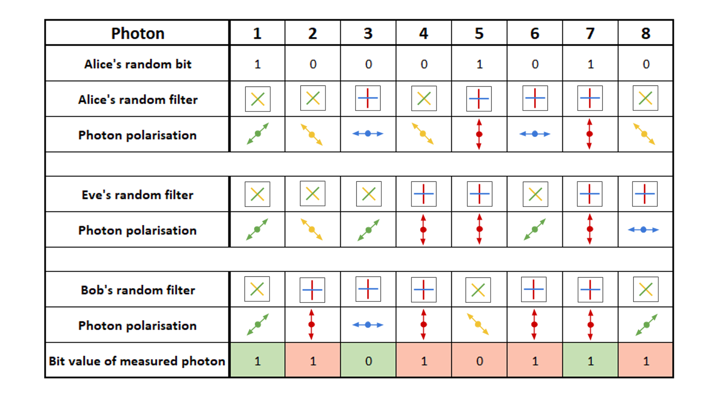
From this table we can see that out of the 8 photons Alice sends to Bob:
• Alice and Bob used different filters for photons 2, 4 & 5 and hence their corresponding bit values are discarded.
• For photons 6 & 8, Alice and Bob used the same filters but have different bit values, this indicates an intruder may be present and so these bits are flagged as an error and discarded. If the error value exceeds the predetermined set value for p, then Alice and Bob discard all bit values and restart.
• Otherwise this leaves photons 1, 3 & 7 which will create the key. This means the random, symmetric key between Alice and Bob is 101.
As we can see, QKD in theory provides an amazing new solution to encrypting data in a totally secure way, by producing a key which is completely random and hence impossible to guess.
The problem is that at the moment, quantum channels can only work over a limited distance, definitely not large enough to use mainstream in the real world. Furthermore, the 2 recipients involved in QKD need a pre-authenticated classical channel of communication before beginning QKD (so that Alice and Bob can communicate what filters and corresponding bits they have for each photon). This means there would already have had to have been a symmetric key of sufficient length and security set up between the 2 users, almost rendering the whole point of QKD useless.
Either way it is still an interesting concept that is in the early stages of development and will perhaps lead to an even greater discovery for quantum cryptography, and cryptography as a whole, in the future!
Quantum Random Number Generators
Most keys used in modern day encryption are produced using sequences of random numbers generated from software, this algorithm is called a pseudo random number generator (PRNG). However, these numbers can never be truly random because any number generated by an algorithm will always have some kind of pattern in it, no matter how subtle.
Consider, for example, a slot machine which uses a PRNG to randomly output symbols on 3 (or sometimes 5) reels. If these symbols match, you win big. Usually this is seen as a game of chance but by recording the results of the slot machine over a long period of time and analysing the results, you could potentially reverse-engineer the PRNG to predict (to a high degree of accuracy) what the slot machine will output.
Similarly, this could be applied to encryption keys, making them vulnerable to being discovered. What we need is a true random number generator. The problem is it's extremely hard to mimic randomness as it requires a non-deterministic algorithm (i.e. an algorithm that, even for the same input, returns different outputs on different runs). This is where quantum computers come into use. Unlike our world, the quantum world is truly random and we can utilize the intrinsic randomness of subatomic particles’ behaviour at the quantum level to produce a truly random number.
The first quantum random number generators (QRNG’s) were based on the observation of the radioactive decay of some element. Although effective, these generators were bulky and raised health concerns by using radioactive materials. A safer method that can be used for generating random bits is by firing photons at a semi-transparent mirror and recording whether they reflect or transmit. The process in which a photon either reflects or is transmitted is intrinsically random and cannot be influenced by external parameters, meaning there's a 50% chance either possibility can occur.
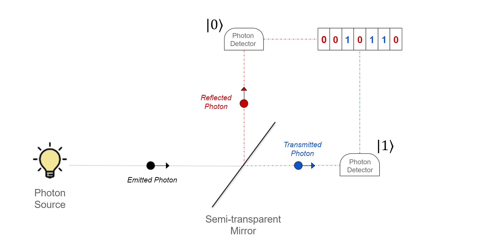
Today, QRNG’s have been built which can produce a billion random numbers per second and are being used to improve the security of cloud providers, banks and government agencies around the world. However, there are still limitations to QRNG’s. One of the biggest is creating a QRNG which is both small and cheap but also fast enough to keep up with the demand for random numbers within a system.
Conclusion
This is just a brief introduction to the vast world that is quantum computing, with many ideas still being developed and many more yet to be thought of. Although all these amazing concepts and trials are here, quantum computers are yet to make it into the mainstream world due to the difficulty in engineering and managing them.
More specifically, one of the biggest problems is the
noise. Also known as
quantum decoherence, it is created during quantum computations and can destroy the superposition state of the qubits over time. This is mainly due to quantum mechanical states being delicate and needing almost total isolation from the environment. Factors such as vibrations, temperature fluctuations, electromagnetic waves etc. will cause the qubits to be corrupted and decay over time. To allow for this, the computers require temperatures near absolute zero and shielding from radiation which is expensive and also inconvenient. Furthermore as the number of qubits used in a quantum computer increases, the noise also increases, making the computer more and more unreliable.
For quantum computers to be considered useful, they must stay below a certain threshold for noise called the
fault tolerance. At this moment in time, quantum computers can't use enough qubits that will both make it practical enough for today's use whilst still staying below this threshold. However, algorithms are being written that can detect the noise in a quantum computing system so that it can be calibrated to remove this noise but still allow the computer to function correctly. Once these algorithms work properly for larger-scale quantum computers, it'll allow for larger and more complex computations to take place, improving the usefulness of these computers.
Once the barriers to quantum computers have been overcome, this will open up a whole new world for cryptography. Everyday more and more people are online as we do our shopping, send private emails, and talk to our friends. The need for more secure encryption is vital for the future and this is hopefully what quantum computers will allow in order for us to stay protected and safe online.
Written by Louise